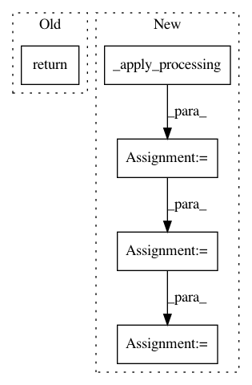

7fb43a1170746644db33cb8a5f10fe94298d85da,art/classifiers/keras.py,KerasClassifier,class_gradient,#KerasClassifier#Any#Any#,80
Before Change
else:
if not hasattr(self, "_class_grads"):
self._init_class_grads(logits=False)
return np.swapaxes(np.array(self._class_grads([x])), 0, 1)
def predict(self, x, logits=False):
Perform prediction for a batch of inputs.
After Change
`(batch_size, nb_classes, input_shape)`.
:rtype: `np.ndarray`
x_ = self._apply_processing(x)
if logits:
if not hasattr(self, "_class_grads_logits"):
self._init_class_grads(logits=True)
grads = np.swapaxes(np.array(self._class_grads_logits([x_])), 0, 1)
else:
if not hasattr(self, "_class_grads"):
self._init_class_grads(logits=False)
grads = np.swapaxes(np.array(self._class_grads([x_])), 0, 1)
grads = self._apply_processing_gradient(grads)
assert grads.shape == (x_.shape[0], self.nb_classes) + self.input_shape
return grads
In pattern: SUPERPATTERN
Frequency: 3
Non-data size: 5
Instances
Project Name: IBM/adversarial-robustness-toolbox
Commit Name: 7fb43a1170746644db33cb8a5f10fe94298d85da
Time: 2018-06-26
Author: Maria-Irina.Nicolae@ibm.com
File Name: art/classifiers/keras.py
Class Name: KerasClassifier
Method Name: class_gradient
Project Name: IBM/adversarial-robustness-toolbox
Commit Name: 7fb43a1170746644db33cb8a5f10fe94298d85da
Time: 2018-06-26
Author: Maria-Irina.Nicolae@ibm.com
File Name: art/classifiers/keras.py
Class Name: KerasClassifier
Method Name: loss_gradient
Project Name: IBM/adversarial-robustness-toolbox
Commit Name: e21ef336207b0f9ae378c77430d298945827830a
Time: 2019-02-12
Author: M.N.Tran@ibm.com
File Name: art/classifiers/pytorch.py
Class Name: PyTorchClassifier
Method Name: get_activations